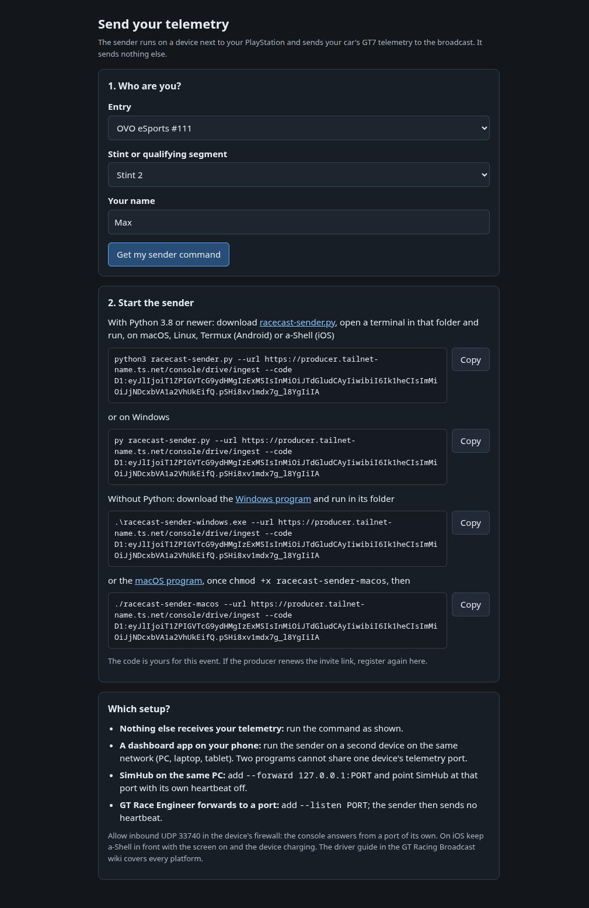
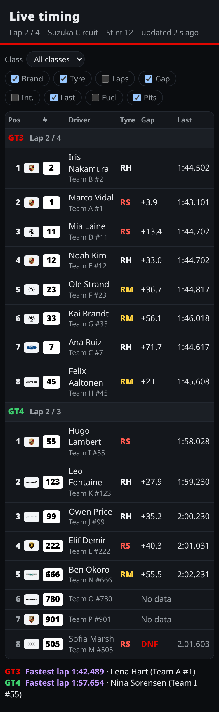

<!doctype html>
<html lang="en">
<head>
<meta charset="utf-8">
<meta name="viewport" content="width=device-width, initial-scale=1">
<link rel="icon" href="favicon.svg" type="image/svg+xml">
<link rel="apple-touch-icon" href="apple-touch-icon.png">
<title>Driver Telemetry · Onboarding · GT Racing Broadcast</title>
<link rel="stylesheet" href="vendor/reveal/dist/reveal.css">
<link rel="stylesheet" href="vendor/reveal/plugin/highlight/monokai.css">
<link rel="stylesheet" href="assets/deck.css">
</head>
<body data-role="driver">
<div class="reveal"><div class="slides">

<section data-markdown><script type="text/template">
<span class="role-tag">Driver · Onboarding</span>
# Driver telemetry
Send your car's GT7 telemetry to the broadcast. The race order, gaps and track map come from it.

- A small program, the **sender**, runs on a device next to your PlayStation.
- It passes the console's telemetry to the producer's relay and sends nothing else.
- It changes nothing in GT7 or in your other apps.

Note: Welcome to the driver onboarding. As a league driver you can send your own GT7 telemetry to the broadcast. The relay builds the race order, the gaps and the track map from it. A small program called the sender runs on a device on the same network as your PlayStation. It passes the console's telemetry to the producer's relay and sends nothing else. It does not change what GT7 or your other apps do.
</script></section>

<section data-markdown><script type="text/template">
## Get your command
<div style="display:flex;gap:36px;align-items:flex-start">

<div>

1. Open the **invite link** the producer shares for the event.
2. Pick your **entry** and, in an endurance race, your **stint** or qualifying segment.
3. Type your name and press **Get my sender command**.

The command carries your **personal code**. It works for the whole event. After a renewed invite link, register again.

</div></div>

[Driver telemetry](https://github.com/jegr78/gt-racing-broadcast/wiki/Driver-Telemetry#get-your-command)

Note: To get your command, open the invite link the producer shares for the event. Pick your entry and, in an endurance race, your stint or your qualifying segment. Type your name and press Get my sender command. The page then shows a command with your personal code. That code works for the whole event. If the producer renews the invite link, open the new link and register again.
</script></section>

<section data-markdown><script type="text/template">
## Which setup
On one device only one program can receive GT7 telemetry. Pick the line that matches what you already run:

- **Nothing else receives it:** run the command as shown, on a PC, laptop, tablet or phone.
- **A dashboard app on your phone:** run the sender on a **second device** on the same network.
- **SimHub on the same PC:** add `--forward 127.0.0.1:PORT` and point SimHub's GT7 input at that port, its own heartbeat off.
- **GT Race Engineer forwards packets to a port:** add `--listen PORT`.

No console found? Add `--console <PlayStation IP>`.

Note: GT7 sends telemetry to every device that asks, but on one device only one program can receive it. So pick the line that matches what you already run. If nothing else receives your telemetry, run the command as shown, on a PC, a laptop, a tablet or a phone. If you use a dashboard app on your phone, run the sender on a second device on the same network, because it cannot share the phone with the app. With SimHub on the same PC, add the forward option with a local port, point SimHub's GT7 input at that port and turn SimHub's own heartbeat off. If an app such as GT Race Engineer already forwards the packets to a port, add the listen option with that port. The sender finds the PlayStation by itself. If it reports that no console was found, add the console option with the PlayStation's IP address.
</script></section>

<section data-markdown><script type="text/template">
## One command per platform
Each command ends in `--url … --code …` with your link and code. The invite page shows them ready to copy.

| Device | Run |
|---|---|
| Windows, with Python | `py racecast-sender.py …` |
| Windows, no Python | `.\racecast-sender-windows.exe …` |
| macOS, Linux | `python3 racecast-sender.py …` |
| macOS program | `chmod +x racecast-sender-macos` once, then `./racecast-sender-macos …` |
| Android (Termux), iPhone/iPad (a-Shell) | download the script with `curl`, then `python3 racecast-sender.py …` |

[Your platform](https://github.com/jegr78/gt-racing-broadcast/wiki/Driver-Telemetry#your-platform)

Note: Every platform runs the same sender with your link and your code, and the invite page shows each command ready to copy. On Windows with Python, download the script and run it with py. Without Python, download the Windows program and run it in its folder. On macOS and Linux, run the script with python3, or on macOS make the macOS program executable once and run it. On Android in Termux and on an iPhone or iPad in a-Shell, download the script with curl from the link on the invite page, then run the Python command.
</script></section>

<section data-markdown><script type="text/template">
## Firewall and first start
- Every device: **allow inbound UDP 33740**, or your `--listen` port. The console answers from a port of its own, so a firewall drops it by default.
- **Windows:** SmartScreen blocks the unsigned program. Choose **More info**, then **Run anyway**. Allow **private networks** when asked.
- **macOS:** the first start is refused. Open **System Settings, Privacy & Security** and choose **Open Anyway**.
- **Linux (ufw):** `sudo ufw allow 33740/udp`
- **Android:** run `termux-wake-lock` first. **iOS:** keep a-Shell in front, the screen on, the device charging.

Note: Every platform needs one thing from its firewall. Allow inbound UDP on port 33740, or on your listen port. The console sends from a port of its own, so its packets do not count as an answer and a firewall drops them by default. On Windows the program is not signed. SmartScreen shows a warning, so choose More info and then Run anyway, and allow private networks when Windows asks. On macOS the first start is refused. Open Privacy and Security in the System Settings and choose Open Anyway. On Linux with ufw, allow the port with one command. On Android, run termux-wake-lock first so Android does not pause Termux. On an iPhone or iPad, a-Shell only runs in the foreground, so keep it in front, keep the screen on and keep the device charging.
</script></section>

<section data-markdown><script type="text/template">
## While it runs
- Every ten seconds the sender prints a status line: packets per second from the console, batches sent to the relay.
- It says when the console goes quiet, for example in menus, and catches up after a short outage. **Ctrl+C** stops it.
- The relay takes **one sender per entry**, in an endurance race **two per team**: the driver on track and the one waiting for the next stint.
- The sender says someone else sends for your entry? Ask the producer.

**It stops?** After five seconds your entry shows **No data** and keeps its place. Your race in GT7 goes on as before. Start the command again.

Note: While it runs, the sender prints a status line every ten seconds, with the packets per second it receives from the console and the batches it sends to the relay. It tells you when the console goes quiet, for example in menus or replays, and it catches up after a short outage. Stop it with Control C. The relay accepts one sender per entry in a single lobby race, and two per team in an endurance race, the driver on track and the one waiting for the next stint. If the sender says that someone else sends for your entry, ask the producer. If the sender stops, your entry shows No data after five seconds and keeps its place. The sender only reads telemetry, so your race in GT7 is not affected. Run the command again to continue.
</script></section>

<section data-markdown><script type="text/template">
## What the broadcast shows


Timing tower, lap count, fastest lap and a track map with every car as a numbered dot. It is on air only when the **director** shows it.

[On air and in the cockpit](https://github.com/jegr78/gt-racing-broadcast/wiki/Driver-Telemetry#on-air-and-in-the-cockpit)

Note: This is what your telemetry turns into on the broadcast. The driver dashboard shows a timing tower, the lap count, the fastest lap and a track map with every car as a numbered dot in its entry colour. It goes on air only when the director shows it. The commentators see the same data in their cockpit.
</script></section>

<section data-markdown><script type="text/template">
## Public live timing
<div style="display:flex;gap:40px;align-items:flex-start">

<div>

Team mates and viewers follow the race in a browser, **without the stream** and without a login.

- Each event has a public **timing link**, separate from your invite. The producer's Control Center and the race desks show it.
- It shows order, gaps, last lap, pit stops and the fastest lap, with the same delay as the broadcast dashboard.
- Readers switch columns on and off.

</div></div>

[Public live timing](https://github.com/jegr78/gt-racing-broadcast/wiki/Driver-Telemetry#public-live-timing)

Note: Your team mates and the viewers can follow the race in a browser, without the stream and without a login. Each event has a public timing link, separate from your invite link. It shows in the producer's Control Center and on the race desks. The page shows the order, the gaps, the last lap, the pit stops and the fastest lap, with the same delay as the broadcast dashboard. Readers can switch columns on and off.
</script></section>

<section data-markdown><script type="text/template">
## Recap
- Invite link, pick entry and stint, **Get my sender command**.
- Pick the setup: nothing else, second device, SimHub `--forward`, or `--listen`.
- Allow **inbound UDP 33740** once.
- One sender per entry, two per team in endurance.
- It stops? **No data**, your place stays, the race goes on. Run it again.

Go deeper:
[Driver telemetry](https://github.com/jegr78/gt-racing-broadcast/wiki/Driver-Telemetry)

Note: To recap. Open the invite link, pick your entry and stint, and press Get my sender command. Pick the setup that matches what you already run: nothing else, a second device, SimHub with the forward option, or another app with the listen option. Allow inbound UDP on port 33740 once. The relay takes one sender per entry, and two per team in an endurance race. If the sender stops, your entry shows No data and keeps its place, and your race goes on. Just run the command again.
</script></section>

</div></div>
<script src="vendor/reveal/dist/reveal.js"></script>
<script src="vendor/reveal/plugin/markdown/markdown.js"></script>
<script src="vendor/reveal/plugin/highlight/highlight.js"></script>
<script src="vendor/reveal/plugin/notes/notes.js"></script>
<script src="assets/deck.js"></script>
</body>
</html>
